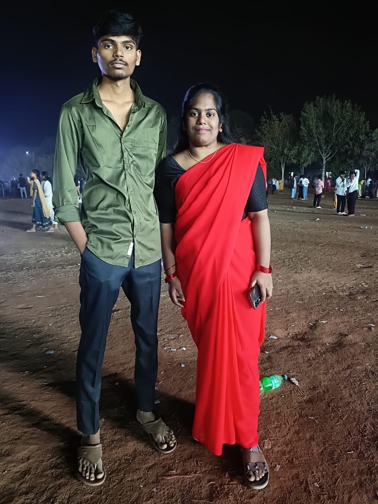

Through random laughs, quiet support, and unforgettable moments.
Some bonds never need to be forced. They simply feel like home.
A digital gift for my best friend
This website is a little reminder that your presence matters, your kindness stays, and every memory we made still glows in my heart.
|
Some bonds never need to be forced. They simply feel like home.
Our friendship story
Scroll through these little milestones like a letter unfolding one feeling at a time.
There are people we meet, and then there are people who quietly become familiar to the soul. That was you.
Inside jokes, random chaos, and small moments somehow became the memories that still make me smile first.
Real friendship is not only fun. It is also who stays kind, steady, and honest when life gets heavy.
Little surprise
This part is made to feel like a hidden note someone keeps folded inside a favorite book.
A beautiful friendship leaves light behind in every memory it touches.
Memory gallery
Because some pictures hold more emotion than long paragraphs ever could.

A photo that feels like warmth, support, and a story worth keeping forever.

The kind of moment that quietly says, “I am glad we shared this part of life together.”
Final reveal
If life ever becomes loud, I hope this page still reminds you of one simple truth: your friendship has been a real gift, and I will always carry it with gratitude. ?